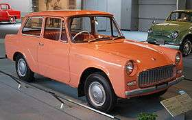
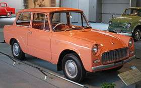
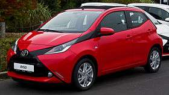
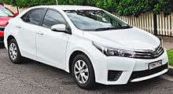
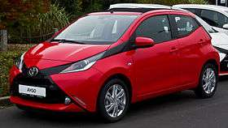
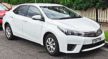

Toyota's new headquarters building in Toyota City, Japan
Toyota Motor Corporation is a Japanese automotive manufacturer headquartered
in Toyota, Aichi, Japan.In March 2014 the multinational corporation consisted of 338,875
employees worldwide and, as of February 2016, is the 13th-largest company in the world by
revenue.Toyota was the largest automobile manufacturer in 2012 (by production) ahead of
the Volkswagen Groupand General Motors.In July of thatyear, the company reported the
production of its 200-millionth vehicle.Toyota is the world's first automobile manufacturer
to produce more than10 million vehicles per year. It did so in 2012 according to OICA,
and in 2013 according to company data.As of July 2014, Toyota was the largest listed
company in Japan by market capitalization (worth more than twice as much as
#2-ranked SoftBank) and by revenue.
The company was founded by Kiichiro Toyoda in 1937, as a spinoff from
his father's company Toyota Industries to create automobiles. Three years earlier, in 1934, while still a
department of Toyota Industries, it created its first product, the Type A engine, and, in 1936, its first
passenger car, the Toyota AA. Toyota Motor Corporation produces vehicles under 5 brands, including the Toyota
brand, Hino, Lexus, Ranz, and Scion. It also holds a 51.2% stake in Daihatsu, a 16.66% stake in Fuji Heavy
Industries, a 5.9% stake in Isuzu, a 3.58% stake in the Yamaha Motor Company, and a 0.27% stake in Tesla,
as well as joint-ventures with two in China (GAC Toyota and Sichuan FAW Toyota Motor), one in India (Toyota Kirloskar),
one in the Czech Republic (TPCA), along with several "nonautomotive" companies.[12] TMC is part of the Toyota Group,
one of the largest conglomerates in the world.
 



 


